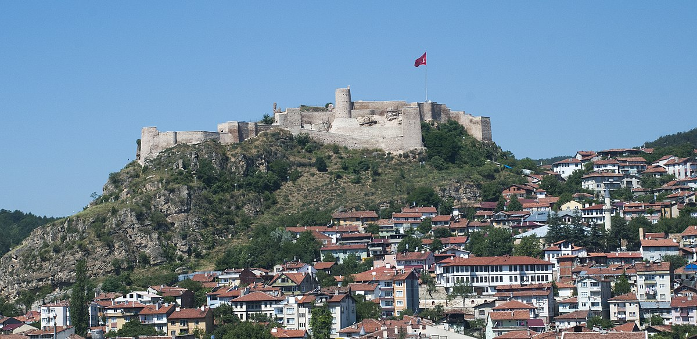

Tarihçesi
Kastamonu Kalesi, şehrin merkezinde yüksek bir tepe üzerinde yer alır ve şehrin en önemli tarihi yapılarından biridir. M.S. 12. yüzyılda Bizanslılar tarafından inşa edildiği düşünülmektedir. Kale, Selçuklu ve Osmanlı dönemlerinde de kullanılmış ve çeşitli onarımlar görmüştür.
- Konum: Şehir merkezinde, hakim bir tepede
- Yapım Dönemi: 12. yüzyıl (Bizans)
- Kullanım: Savunma, gözetleme ve barınma